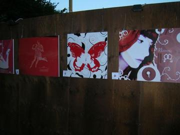
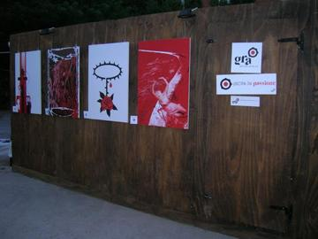
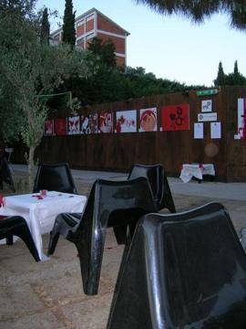
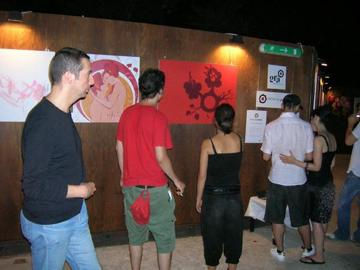
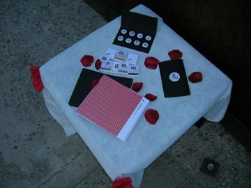

2006 · Principale · Tema/Colore
Tema/Colore 06
Amore / Rosso
Opere 19


La serata 5 foto










Artisti 19
Andrea De MarcoAnna Laura MillacciBarbara ThermesChiara TomassiniClio CrescenteElisabetta PalloneFabio ArmidaFrancesco BellonGinevra Virgili · gin°Lidia CestariLiza Marie CalestiniLoriana ApreaMassimiliano PanzironiMichele MariMiriam Tognella · Disorder DesignRoberta Rizzi · RoRiStefano Longo · thisisstupidTommaso Zanderigo IonaValentina Tata
GRA — Genuine Roman Art · RomaOpere © i rispettivi autori